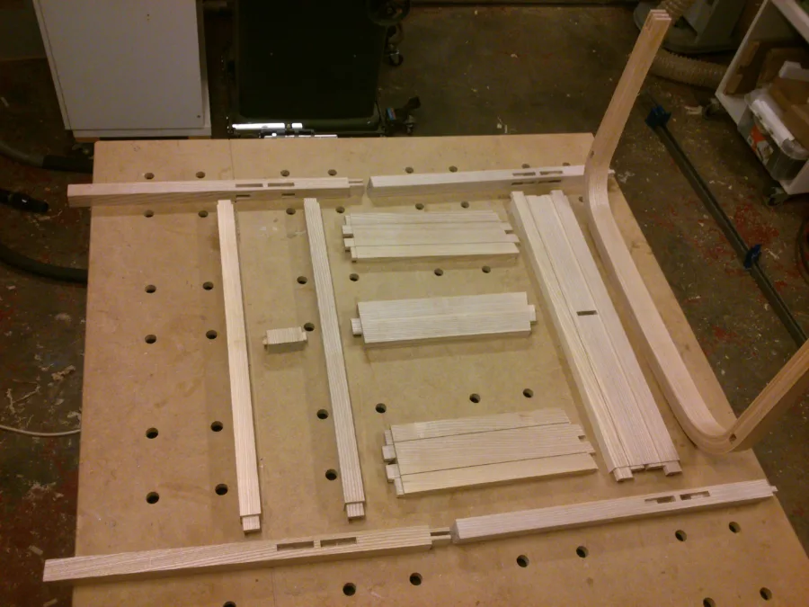

Tjänster
Från första tanke.
Till färdig möbel.
Formgivning, visualisering och möbeltillverkning i samma process. För personliga möbler som fungerar i ditt rum.

Carmonius Finsnickeri
Formgivning ↗
Vi utgår från platsen, din idé och funktionerna du behöver. Proportioner, material och konstruktion får utvecklas tillsammans till en sammanhängande form.

Carmonius Finsnickeri
3D-modellering ↗
En digital modell gör det lättare att förstå möbelns uttryck. Mått, material och färger kan justeras så att viktiga beslut tas innan arbetet i trä börjar.

Carmonius Finsnickeri
Möbeltillverkning ↗
Möbler tillverkas i små serier med genomtänkta träförband. Maskinbearbetning kombineras med handverktyg för att ge slutresultatet dess precision och känsla.
Från din idé till något alldeles eget